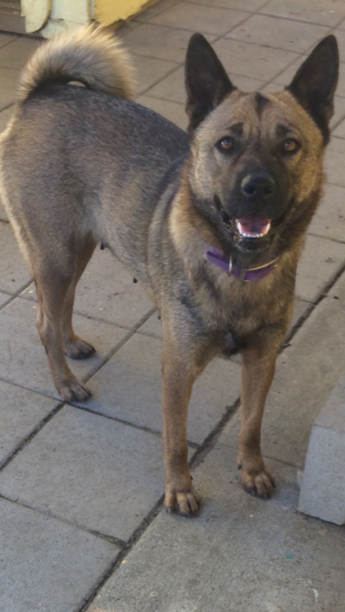
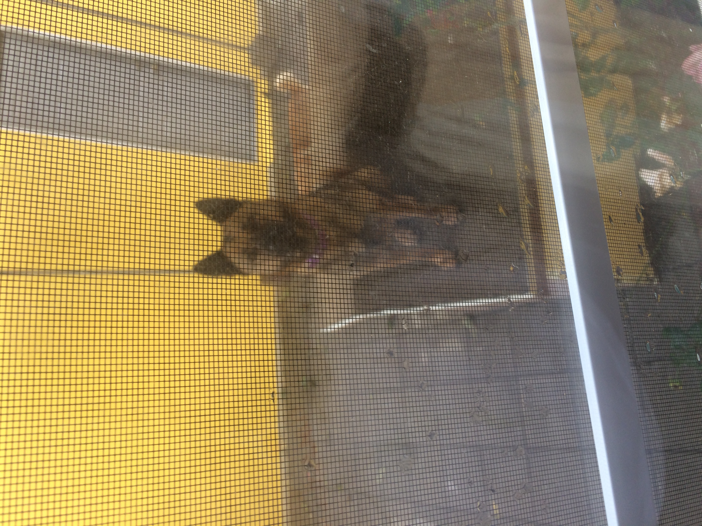

Go Back

Found: Jindoke
Description: Medium size dog, brown and gold fur, and ginger eyes.
Sex: Female
Age: 3 years old
Last Seen: Athens Park Los Angeles, 9/18/16.

Lost: German Sheperd
Description: Medium size dog, brown and gold fur, and ginger eyes.
Sex: Female
Age: Unknown
Last Seen: Athens Park Los Angeles, 9/18/16.
found: Miniature Pinscher
Description: Pinscher, black and brown fur, and dark brown eyes.
Sex: Female
Age: 7
Last Seen: Athens Park Los Angeles, 9/18/16

Lost: Labrador Retriver
Description: Medium size dog, gold and white fur, and dark brown eyes
Sex: Male
Age: 3 years
Last Seen: Avalon Street, Los Angeles. 10/3/16
Go Back